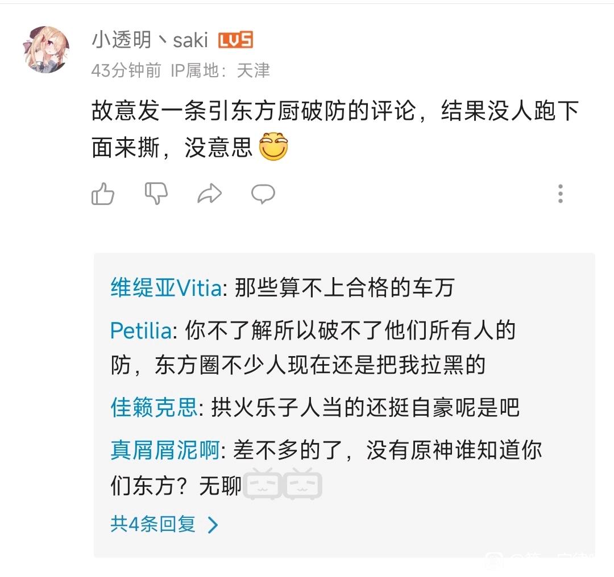
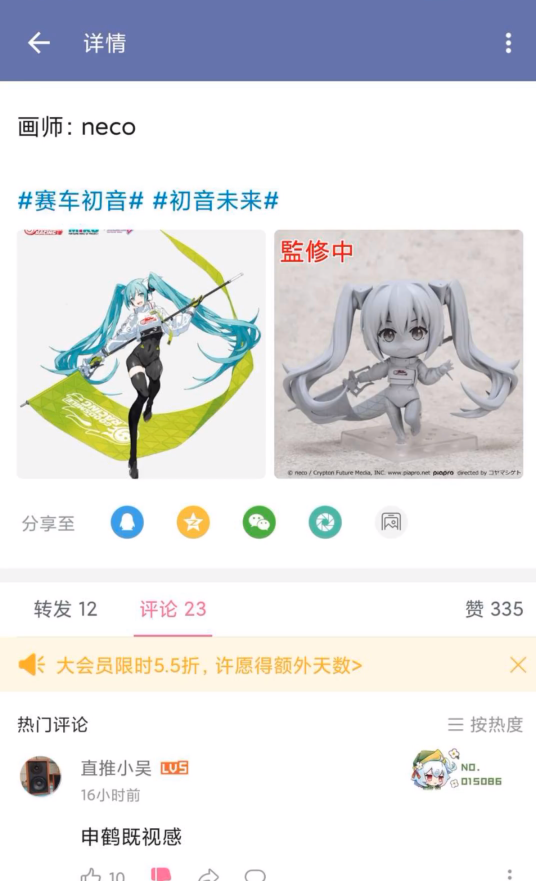
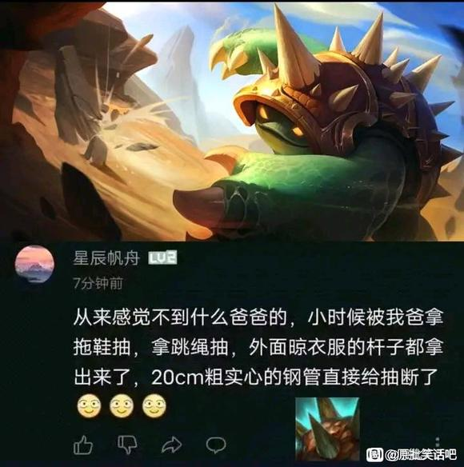
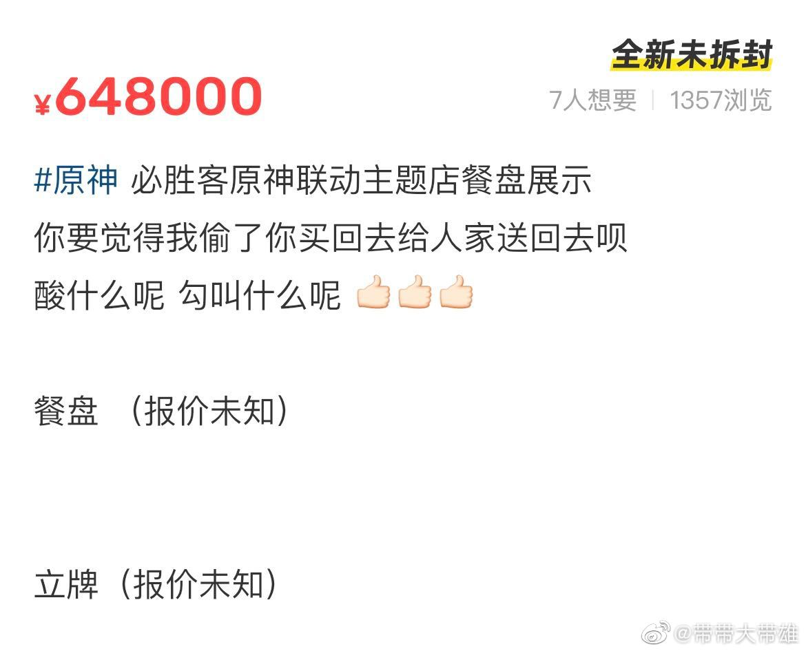

什么是原神第一定律
原神第一定律，或称OP第一定律，在特定语境中可简称为第一定律，是指在b站的评论区中，若有逆天的评论出现，那么点开他的个人主页，往往会发现这是一个原神玩家。（当然，也不一定仅限b站，别的平台也是可以的）
什么是OP
OP，也叫原批，指的是逆天的原神玩家，名字的来源是著名的抗压背锅吧在被OP爆破之后造出来的词。O，圆之意，取圆和原谐音的意思；P，批之意，在当代网络用语中，x批一般指x游戏的逆天玩家，一般含贬义，比如逆天的王者荣耀玩家就可称为农批，逆天的DOTA玩家就可称为刀批（当然，实际上一般称为刀斯林），显然的，逆天的原神玩家就可称为原批。当然在x批的定义中也不一定要逆天，有时候只要玩x游戏就可以满足该要求，有时也不含贬义，比如英雄联盟天才辅助beryl就是一名原神玩家，抗抗们就以OP来指代他。
OP逆天言论行为大赏
在分析OP逆天的原因之前，我们还是应该建立一些直观的感受，来欣赏一些OP逆天的言论
感觉不如原神。。。画质
我们所讨论的第一类叫做ky，ky，来源于日语空気が読めない发音的缩写，意思为说不合时宜的话，本文所讨论的ky，就是指OP在其他视频底下刷有关原神的评论，最著名的莫过于在原神的爸爸塞尔达传说下刷感觉不如原神。。。画质。
下图所展示的，是OP对于东方project（起源于1972年的古老ip）的碰瓷

又比如对于初音未来的碰瓷（一个诞生于2007年的世界著名ip）

以及前段时间偷了英雄联盟动画《双城之战》主题曲《孤勇者》
我去，你说的这个人是我同学（捂脸.png）
OP言论的第二个行为，则是缺乏知识及常识，无论是基本的生活常识和基本的社会常识
比如随意编造数值（被戳穿了还会急眼）

测绘错80cm
比如碰瓷消防员和缉毒警察
原神的文化输出！
OP的另一种逆天言论，就是对于米哈游的无限忠诚，对于原神的无限热爱。
比如觉得原神有优秀的文化输出。原神在国外的流水高这一点不假，事实上，只不过是一些穿着暴露的烧鸡罢了。
对于米哈游的无限忠诚，这当然体现在觉得米哈游是一家优秀的公司，米哈游很能赚钱至一点不假，至于产品的质量。。。呃呃
当然对于其他游戏公司（比如腾讯）的抹黑还是少不了的
偷个盘子先
以上都是OP的网上发言，当然少不了逆天的线下行为。
比如前段时间热度很高的原神与必胜客的联动，OP直接把画着原神角色的盘子偷了。

OP逆天的原因分析及原神这款游戏本身
相信大家都已了解了OP是怎么样的一个群体，那么，他们为什么如此逆天呢？
我认为这和用户群体普遍的年龄偏小（极大量未走上社会的学生，包含大量的无知小学生）以及米哈游对于玩家的病态宣传有关，但这并不是本文的重点，在这里就不展开说了。
对于原神这款游戏本身，我的评价是值得称赞的地方有，比如是少有的多平台都可以玩的游戏（PC，移动端），变现能力也是有目共睹的，此外，对于3A大作外表的抄袭抄的还凑活，如果没有玩过3A大作的人对于这款游戏应该还是能有一点兴趣的。然而，仔细一看就会发现这是个一坨屎的游戏：莫名其妙的剧情，毫无新意的战斗方式技能，令人捉急的节奏,机械呆板的每日任务，甚至过场动画是没有跳过键的。如果一个人没有玩过正儿八经的3A而先遇到了原神（有一说一，由于用户的低龄性，这种人是真的多），那只能说他运气不太好碰到了这么一款弱智游戏，如果一个人玩过许多3A而觉得原神更好玩，那我觉得他的审美有点捉急，当然还有一种人是没空玩要花时间的好游戏而选择快餐式消费（压力巨大的今天，这种人也挺多），那我的评价是不如玩愤怒的小鸟。当然这个游戏的氪金机制也很弱智，角色靠肝基本时间很长，一氪就是一个648，花钱多的一批的同时没什么屌用。
第一定律的数学证明
由上述分析我们已经建立了一个认知：玩原神的人，是个逆天的概率非常的大。但是这个认知显然是不太严谨的，我们当然希望能够通过数学工具，相对严谨地证明OP第一定律。
对于两种特征关联的可能性，那当然要从概率的角度解决问题，而概率问题有频率派和贝叶斯派之争，我认为在本问题中，频率派擅长的极大似然估计法并不太方便描述和证明该问题，那么我们就从贝叶斯派的处理最大后验概率的角度来半定量地证明OP第一定律。
问题目标
证明：当我们看到逆天言论时，他是原神玩家的概率很大。
贝叶斯公式
频率学派的观点是对总体分布做适当的假定，结合样本信息对参数进行统计推断，这里涉及总体信息和样本信息。而贝叶斯的核心思想，就是在此基础上引入了先验，即来源于人们常识和经验的信息。也就是说，和完全客观的频率派相比，贝叶斯派是有一丝主观的偏见在其中的。
于是我们便可得到贝叶斯公式
$$
后验=\frac{似然*先验}{证据}
$$
也就是
$$
P(A|B)=\frac{P(B|A)*P(A)}{P(B)}
$$
其中，$P(A|B)$代表在$B$发生的情况下$A$发生的概率，比如$P(我后选了鳄鱼|对面先选了亚索)$就代表对面选亚索的情况下我会选择玩鳄鱼的概率。
后验是我们要求的值，也是根据观察到的样本修正之后的概率值；似然相当于模型的参数，在贝叶斯的思想中模型也像所求的参数一样是不固定拥有变量的；证据则是前提$B$发生的概率。
建立模型及对模型的分析
我们假定在接下来的讨论中，数据集是全体b站用户；同时，我们把玩原神的人称为原，把发表逆天言论的人称为逆，那么，根据贝叶斯公式我们可以得出：
$$
P(原|逆)=\frac{P(逆|原)*P(原) } {P(逆) }
$$
这么看其实并不是非常make sense，因为右边的多数参数并不能很好的比较大小。
这时我们注意到，全体b站用户这个群体可以简单分为玩原神的和不玩原神的，也就是
$$
b站全体用户=原+非原
$$
这样，我们使用全概率公式对上述式子进行改写，可以得到：
$$
P(原|逆)=\frac{ P(逆|原)*P(原) } { P(原)*P(逆|原)+P(非原)*P(逆|非原) }
$$
这样看来就直观很多了，我们首先看分子：
$P(逆|原)$的值是很大的，因为通过前文的描述，我们相信由于种种的原因（年龄小，米忽悠的宣传等等），原神玩家中逆天的比例是相当高的；$P(原)$的值也是很大的，因为在b站中，原神玩家本身的比例相对还是高的（玩家群体本身确实多，b站作为所谓的二次元圣地有大量的小鬼用户，b站作为原神的服务器之一带来了很多原本不玩b站的用户）。
我们再来看分母：
$P(非原)$是较小的，因为我们已经证明了 $P(原)$ 是比较大的，这么比较大小虽然不严谨，但问题不大，就算是五五开甚至是 $P(非原)$ 更大一些也不会特别影响结果；而 $P(逆|非原)$ ，也就是不玩原神的人中逆天的概率，笔者承认这种逆天的人也确实不少，但只凭原神大多数玩家都是undergraduate的以及因为许多人玩这个游戏变得paranoid，我们相信：$P(逆|非原)$的比例和 $P(逆|原)$ 相比还是比较小的。
$Q.E.D$.
第一定律的应用以及与对证明的反思
由于第一定律相当高的准确率，它被广泛运用于各种鉴定逆天的场景中，这一点我们暂且不提。
值得一提的是：由于第一定律的使用者有时缺乏足够的证据或者自身知识不足，会出现鉴定的人并不是逆天反而自己是逆天的情况，这往往出现在鉴定OP是否缺乏常识的时候。此时，我们将这种人称为：你和OP的最大区别就是你不玩原神。
此外，不玩原神的人中的逆天也是很多的，因此，第一定律并不是一个非常严格的定律，所以拿来图一乐就差不多得了。
最后笔者还想聊聊为什么反OP这个话题：显而易见的，是因为OP中的逆天非常的多，但这真的是原因吗？我们反对的当然是OP低下的素质以及魔怔般的行为。此外于个人情感而言，可以算，因为笔者作为一个undergraduate，身边的$P(逆|原)$还是比较大的，而且对于事物的看法并不是一定有一个唯一答案的，即使自己知道这样中庸的道理：原神玩家中有逆天也有不逆天，非原神玩家中有逆天也有不逆天。也许这应该是目前普世的一个看法或者说最接近真相的一个看法，然而，人之所以为人而不是机器人，因此有非标准答案又怎么样呢。正如王小波所说的：
有些人认为，人应该充满境界高尚的思想，去掉格调低下的思想。这种说法听上去美妙，却使我感到莫大的恐慌。因为高尚的思想和低下的思想的总和就是我自己；倘若去掉一部分，我是谁就成了问题。假设有某君思想高尚，我是十分敬佩的；可是如果你因此想把我的脑子挖出来扔掉，换上他的，我绝不肯，除非你能够证明我罪大恶极，死有余辜。人既然活着，就有权保证他思想的连续性，到死方休。更何况那些高尚和低下完全是以他们自己的立场来度量的，假如我全盘接受，无异于请那些善良的思想母鸡到我脑子里下蛋，而我总不肯相信，自己的脖子上方，原来是长了一座鸡窝。想当年，我在军代表眼里，也是很低下的人，他们要把自己的思想方法、生活方式强加给我，也是一种脑移植。菲尔丁曾说，既善良又伟大的人很少，甚至是绝无仅有的，所以这种脑移植带给我的不光是善良，还有愚蠢。在此我要很不情愿地用一句功利的说法：在现实世界上，蠢人办不成什么事情。我自己当然希望变得更善良，但这种善良应该是我变得更聪明造成的，而不是相反。更何况赫拉克利特早就说过，善与恶为一，正如上坡和下坡是同一条路。不知道何为恶，焉知何为善？所以他们要求的，不过是人云亦云罢了。